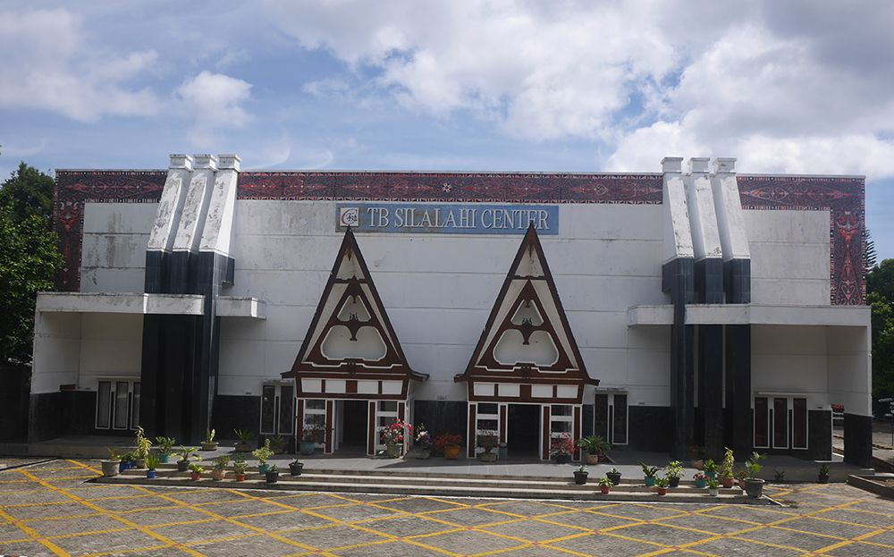

Museum TB Silalahi Center

Museum TB Silalahi Center merupakan salah satu museum yang terkenal di Kabupaten Toba. Museum ini memiliki daya tarik tersendiri. Museum ini merupakan museum pribadi milik TB Silalahi. Di dalam museum tersebut terdapat planel-planel yang menceritakan sejarah hidup dan perjalanan hidup TB Silalahi. Selain itu di dalam museum tersebut juga terdapat benda-benda pribadi serta kendaraan pribadi. Jika kita ingin memasuki museum ini, kita dikenakan biaya sebesar 10.000 per orang. Walaupun dikenakan biaya kita juga bebas untuk melihat-lihat di museum ini, di sini juga tersedia toko yang menjual baju ataupun gantungan dengan disertai motif gorga.